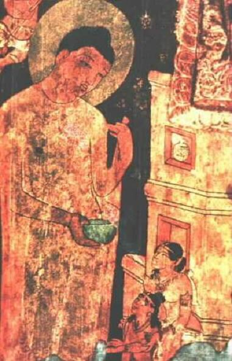

Khi xét nghệ thuật Ấn Độ, cũng như xét mọi khía cạnh của văn minh Ấn Độ, ta không thể nào không khâm phục dân tộc đó: nghệ thuật của họ phát hiện rất sớm mà lại tiến hoá đều đều. Những đồ cổ đào được ở Mohenjodaro không phải chỉ toàn là những đồ cần thiết thường dùng hằng ngày, mà còn có những tượng đàn ông bằng đá vôi, râu ria xồm xoàm, giống người Sumérien lạ lùng, những hình đàn bà và hình loài vật bằng đất nung; những hạt trai và các đồ trang sức khác bằng hồng-mã-não (cornaline), bằng vàng đánh rất bóng. Một con dấu khắc nổi một con bò mộng, nét rất mạnh mẽ, làm cho ta phải kết luận rằng nghệ thuật ngày nay của chúng ta không tiến bộ hơn cổ nhân mà chỉ thay đổi cách biểu thị thôi.
Từ thời đó tới nay, trải qua năm chục thế kỉ, biết bao cuộc biến thiên, hưng phế, nghệ thuật Ấn đã thay đổi cả trăm lần kĩ thuật mà vẫn giữ được vẻ đẹp riêng của nó. Đôi khi sự tiến triển có vẻ đứt quãng, ta thấy mất vài cái khoen trong sợi dây, nhưng như vậy không phải là vì người Ấn đã ngưng chế tạo, xây cất trong những thời đó mà chỉ vì người Hồi xâm lăng đã cuồng nhiệt phá huỷ biết bao nhiêu công trình kiến trúc và điêu khắc của Ấn, và vì thiếu ngân quĩ, các triều đại sau không đủ sức bảo tồn những công trình may mà thoát khỏi cảnh tàn phá đó.
Mới tiếp xúc lần đầu với nghệ thuật Ấn, chúng ta khó mà thưởng thức được hết cái hay, cái đẹp của nó: nhạc thì có vẻ kì cục, hoạ thì tối tăm, kiến trúc thì hỗn độn mà điêu khắc thì kì quá. Mỗi lúc ta phải nhớ lại rằng giám thức của mình là cái gì không vững, không chắc chắn, do truyền thống cùng ảnh hưởng của xã hội chung quanh gây nên, mà xã hội này luôn luôn hẹp hòi, có thiên kiến, như vậy khi phán đoán các dân tộc khác hoặc phê bình nghệ thuật của họ theo tiêu chuẩn, thành kiến của mình luôn luôn khác hẳn của họ, thì làm sao khỏi bất công với họ được.
Ở xứ nào cũng vậy, mới đầu một thợ thủ công cũng là một nghệ sĩ, rồi mãi sau tinh thần mới thay đổi, thợ thủ công không sản xuất một nghệ phẩm nữa, chỉ chế tạo những đồ dùng tầm thường, coi công việc của mình là một cực hình. Sau trận Plassey[1], xứ Ấn thoi thóp, nhưng trước kia, ở Ấn cũng như ở châu Âu thời Trung cổ, mỗi người thợ thủ công là một nghệ sĩ, món vật nào cũng có nét khéo riêng của người chế tạo. Ngày nay cũng vậy, tuy đâu đâu nhà máy cũng mọc lên thay thế các xưởng công nghệ, mà địa vị của thợ thủ công tụt xuống hàng lao công, nhưng tại các châu thành Ấn vẫn còn vô số cửa hàng nhỏ đầy nghẹt các thợ cặm cụi chạm trổ, làm các đồ trang sức, vẽ, thêu, dệt, hoặc làm các đồ bằng gỗ, bằng ngà. Có lẽ không có một dân tộc nào khác mà các nghệ thuật thủ công phồn thịnh bằng Ấn Độ.
Có điều này hơi lạ là đồ gốm ở Ấn chưa bao giờ đạt tới mức nghệ thuật; chế độ tập cấp cấm dùng hai lần một món đồ để chứa (bát, chén, bình…) trừ vài trường hợp đặc biệt vì vậy mà thợ làm gốm chỉ làm qua loa dùng tạm được thì thôi, tô điểm làm chi cho uổng công. Chỉ khi nào đồ dùng vàng hay bạc, như chiếc bình bạc ở Tanjore, hiện nay bày ở Victoria Institute tại Madras, hoặc cái khay đựng trầu bằng vàng ở Kandy, thì thợ thủ công mới chịu gắng sức làm cho có mĩ thuật. Có vô số đồ dùng làm bằng đồng đập[2]: cây đèn, chén, các thứ bình; một hợp kim màu xám đen tên là bidri, mà phần chính là kẽm, dùng để làm các hộp, chậu lớn, khay; người ta đắp nhiều lớp kim thuộc lên nhau, hoặc nhận, chạm vàng, bạc lên một vật bằng đồng. Người ta đục đẽo gỗ thành hình cây lá, loài vật đủ các hình thù. Ngà voi dùng để làm mọi đồ vật, từ những tượng thần thánh tới các con thò lò; hoặc để khảm vào các cánh cửa, các đồ bằng gỗ, các hộp, tráp chứa dầu thơm, son phấn. Người nghèo cũng như người giàu đều thích đồ trang sức, để đeo mà cũng để cất, chứa, thành thử nghề kim hoàn thịnh vào bậc nhất: thành phố Jaipur nổi tiếng về thứ men đỏ như lửa trên nền bằng vàng: móc trâm, châu, ngọc, dây đeo, dao, lược, thứ nào cũng rất nhiều kiểu, chạm hình hoa, loài vật hoặc thần thánh; trên một miếng bảo thạch nhỏ xíu để cho một Bà La Môn đeo, mà người ta chạm được hình năm chục vị thần khác nhau.
Còn về vải vóc thì chưa nước nào hơn được Ấn Độ và từ thời César tới nay, khắp thế giới đều quí các hàng Ấn[3]. Đôi khi họ tính toán tỉ mỉ và khéo léo lạ lùng, nhuộm trước các sợi đường dọc và đường canh từng đoạn dài ngắn bao nhiêu đó, để khi dệt xong không phân biệt được bề mặt và bề trái. Từ thứ hàng len gọi là Khaddar tới thứ hàng gấm mịn thêu kim tuyến, từ thứ pyjama[4] rất đẹp tới những khăn “san” (châle) Cachemire[5] mà nhìn kĩ cũng không thấy đường khâu[6], thứ nào cũng rất đẹp, tỏ rằng nghệ thuật đã có từ lâu đời lắm, tinh vi lắm mà người thợ Ấn cơ hồ bẩm sinh là một nghệ sĩ.
Một buổi hoà nhạc ở Ấn - Nhạc và vũ – Nhạc công – Các âm giai – Các đề tài – Âm nhạc và triết học.
Một du khách Mĩ được mời tới dự một buổi hoà nhạc ở
Âm nhạc của Ấn Độ đã có một lịch sử dài ít nhất là ba ngàn năm. Các thánh ca trong kinh Veda mà ngay cả thơ Ấn cũng là để hát lên; theo nghi thức cổ thì thi và ca, nhạc và vũ chỉ là một. Một người Âu cho vũ Ấn Độ là có vẻ dâm dật, mà người Ấn xét vũ Tây phương thì cũng có cảm giác đó. Trong lịch sử Ấn, rất nhiều thời đại cho vũ là một hình thức sùng bái thần linh, biểu diễn các cử động đẹp đẽ, uyển chuyển, nhịp nhàng để tỏ niềm tôn kính và làm thoả ý các thần linh. Chỉ trong thời Cận đại, các vũ nữ devadasi mới ra khỏi các đền chùa mà muá cho hạng thế tục coi. Đối với người Ấn, vũ không phải chỉ nhắm mục đích để hở da thịt cho khán giả coi, mà đôi khi còn là diễn các tiết điệu, vận hành của vũ trụ. Chính Shiva là thần vũ, và vũ khúc Shiva tượng trưng sự vận hành của vũ trụ[8].
Các người tấu nhạc, múa, hát cũng như mọi nghệ sĩ ở Ấn, đều thuộc những tập cấp thấp nhất. Một người Bà La Môn ở nhà có thể vừa ca hát vừa gẫy cây vina hoặc một cây đàn nào khác, nhưng không khi nào chịu chơi nhạc vì tiền hoặc đưa một ống sáo, một chiếc kèn lên miệng mà thổi. Cho tới thời mới đây, các buổi hoà nhạc còn rất hiếm ở Ấn Độ; ai thích nhạc thế tục, thì có thể cao hứng hát lên hoặc gẩy một cây đàn; một vài gia đình giàu có hội họp một ít người sành nhạc để nghe nhạc trong nhà cũng như ở châu Âu. Chính vua Akbar cũng giỏi nhạc, và triều đình ông có một ban nhạc trong đó kép hát Tansen nổi tiếng và giàu nhất, chết yểu hồi ba mươi bốn tuổi vì uống rượu quá. Không có hạng tài tử, chỉ có hạng nhà nghề; người ta cho giỏi nhạc không phải là một cái tài và không cha mẹ nào khuyến khích trẻ thành một Beethoven. Công chúng không cần biết chơi nhạc mà chỉ cần biết nghe nhạc thôi.
Vì ở Ấn Độ, biết nghe nhạc là cả một nghệ thuật cần phải luyện tâm hồn và luyện tai rất lâu. Người Âu có thể không hiểu lời ca của Ấn; cũng như ở các xứ khác, chỉ có hai đề tài chính: tôn giáo và ái tình, nhưng trong âm nhạc Ấn, lời ca không quan trọng và kép hát Ấn đôi khi có thể thay bằng những âm vô nghĩa, cũng như các văn sĩ cực kì tân thời của chúng ta[9]. Còn nhạc Ấn thì dùng những âm giai tế vi, rắc rối hơn nhạc Âu. Âm giai châu Âu có mười hai âm (ton), người Ấn thêm vào mười “vi âm” (microton) nữa. Người Ấn có thể dùng chữ sanscrit để ghi “nốt” nhạc, nhưng thường thường người soạn nhạc không chép lại cho người diễn tấu đọc, chỉ gẩy cho môn đệ nghe rồi cứ theo cách đó mà chuyền tai nhau từ thế hệ này tới thế hệ sau. Một câu nhạc không chia ra nhiều nhịp mà kéo dài thành một legato[10] bất tuyệt làm cho người phương Tây bỡ ngỡ. Không có hài âm mà cũng bất chấp cả luật hoà âm, miễn sao cho êm tai thì thôi, có thể là có một thứ bối cảnh âm điệu nào đó. Về điểm đó, nhạc Ấn giản dị, thô sơ hơn nhạc Âu nhiều, nhưng về phương diện âm giai và âm tiết thì lại phức tạp hơn. Số khúc điệu (mélodie) vừa hạn chế mà lại vừa vô hạn; hạn chế vì phải theo một trong ba mươi sáu nhạc chỉ chính; nhưng đồng thời lại vô hạn định vì từ các nhạc chỉ chính đó, nhạc sĩ có thể tạo ra bao nhiêu biến điệu (variation) cũng được, tới vô cùng. Mỗi nhạc chỉ đó, gọi là raga[11], gồm năm, sáu hay bảy “nốt” nhạc và nhạc sĩ phải dùng đi dùng lại hoài một trong những “nốt” nhạc đó. Tùy tình cảm hay cảnh tượng được diễn trong mỗi raga, mà raga mang tên là “Bình minh”, “Xuân cảnh”, “Cảnh đẹp hoàng hôn” hay “Say rượu” vân vân, mỗi raga liên hệ tới một tháng nào trong năm hay một giờ nào trong ngày. Theo các truyền kì Ấn Độ, các raga đó có một năng lực huyền bí; chẳng hạn người ta kể rằng một vũ nữ trẻ miền Bengale hát bản đảo vũ Megh mallar raga mà làm cho trời đổ mưa. Các raga có từ lâu đời nên mang tính cách linh thiêng; tương truyền chính thần Shiva đã qui định hình thức các raga nên nhạc sĩ nào cũng phải theo đúng. Một nhạc sĩ tên là Narada vì không thận trọng khi diễn các raga, bị thần Vichnou đày xuống địa ngục để thấy cảnh đàn ông đàn bà khóc lóc thảm thiết vì gẫy chân gẫy tay; Vichmou bảo Narada rằng những raga mà Narada đã diễn bậy cũng như các chân tay gẫy đó. Từ đó Narada thận trọng hơn mỗi khi chơi nhạc.
Nhạc sĩ Ấn phải giữ đúng cái raga đã lựa làm nhạc chỉ thì chẳng qua cũng như nhạc sĩ Âu khi soạn một bản so-nat (sonate) hay một bản hoà âm (symphonie) phải giữ đúng ý chính của bản nhạc, chứ không bị câu thúc gì hơn; cả hai tuy mất một chút tự do thì bù lại, bố cục được liên tục hơn, hình thức đăng đối hơn. Nhạc sĩ Ấn cùng ở trong một hoàn cảnh với triết gia Ấn; cũng khởi đầu từ cái hữu hạn để cho “tinh thần bổng lên chỗ vô cùng” nhờ âm tiết, khúc nhạc uyển chuyển tới rồi lui, lui rồi tới, xoắn lấy nhạc chỉ, mà cũng nhờ sự đơn điệu của khúc nhạc nó như thôi miên người nghe, nhạc sĩ riết rồi đạt tới một tâm trạng gần như người tu hành yoga, mất cả ý chí, quên cả bản ngã, quên cả vật thể, không gian và thời gian; tâm thần lần lần chìm vào một cõi hoà hợp bí ẩn và thâm thuý với một Bản thể mênh mông và tĩnh, coi thường mọi ý muốn, mọi sự biến đổi, ngay cả sự chết nữa.
Chắc chắn là người phương Tây chúng ta không bao giờ mê được nhạc Ấn, và muốn hiểu nổi nó thì trước hết phải từ bỏ sự gắng sức, sự tấn bộ, sự ham muốn, sự hoạt động để tìm cái thực thể, sự bất biến, sự an phận, sự nghỉ ngơi rồi.
Môn hoạ thời tiền sử - Các bức hoạ ở Ajanta – Các tế hoạ Rajpute – Hoạ phái Mông Cổ - Hoạ sĩ – Lí thuyết gia.
Con người quê mùa là con người phán đoán theo quan niệm hẹp hòi trong miền mình ở, thấy cái gì hơi là lạ thì cho là dã man. Người ta kể chuyện rằng hoàng đế Jehangir – một người sành và sáng suốt về nghệ thuật – lần đầu tiên nhìn một bức tranh của châu Âu, tuyên bố ngay rằng “không thích chỉ vì vẽ bằng sơn dầu”. Câu chuyện đó tỏ rằng một ông vua cũng có thể quê mùa như ai, và Jehangir khó mà thích được một bức tranh sơn dầu cũng như chúng ta khó mà thích được các tế hoạ (bức hoạ nhỏ xíu) của Ấn.
Các bức tranh vẽ loài vật bằng thổ hoàng (ocre) đó, nhất là bức vẽ một cuộc đi săn con tê[12], người ta thấy trong các hang thời tiền sử ở Singanpour và Mirzapua[13], chứng tỏ rằng môn hoạ đã có ở Ấn từ mấy ngàn năm trước. Đào những lớp đất đá thời tân thạch khí, người ta còn thấy nhiều bàn để pha màu, ở trên còn dính nhiều thứ đất màu. Nhưng lịch sử ngành hoạ ở Ấn còn nhiều chỗ sót, chúng ta chỉ biết lờ mờ thôi, một phần vì thời tiết nóng nực, ẩm thấp đã làm hư hại nhiều tài liệu cổ, một phần nữa vì bọn Hồi “đập phá ngẫu tượng” từ thời Mahmud tới thời Aureng-Zeb đã huỷ hoại gần hết những bức hoạ còn giữ lại được tới khi họ xâm lăng Ấn Độ. Cuốn Vinaya Pitaka (khoảng 300 trước Công nguyên) có chép rằng cung điện vua Pasenada có treo hàng dãy các bức hoạ dọc các hành lang; Pháp Hiển và Huyền Trang cũng tả nhiều lâu đài, đền chùa nổi tiếng về giá trị mĩ thuật của các bức hoạ trên tường; nhưng ngày nay những bức hoạ đó tiêu huỷ hết rồi, không còn gì cả. Một trong những bức bích hoạ cổ nhất của Tây Tạng vẽ một hoạ sĩ đương vẽ hình Phật Tổ; nhiều người cho rằng tới thời Phật Tổ thì ngành hoạ Ấn Độ xuất hiện từ lâu rồi và đương ở giai đoạn toàn thịnh.
Những bức hoạ cổ nhất hiện nay chúng ta có thể định được thời đại, là một loạt bích hoạ đạo Phật (khoảng 100 trước Công nguyên) tìm thấy trên vách một cái hang ở Sirguya, thuộc Trung bộ Ấn. Từ hồi đó, nghệ thuật bích hoạ - vẽ lên mặt phẳng bằng thạch cao mới đắp lên tường và còn ướt – mỗi ngày mỗi tiến, và tới giai đoạn các bích hoạ ở trong các hang Ajanta[14] thì đạt tới mức hoàn hảo mà Giotto và Léonard de Vinci[15] cũng không hơn được. Các đền đó đục ngay trong đá trên sườn một ngọn núi, trong khoảng từ thế kỉ thứ nhất tới thế kỉ thứ VII. Sau khi đạo Phật miền đó suy tàn, đền chùa bị bỏ hoang thành rừng; dơi, rắn, và các loài thú vào đó làm hang, cứt chim chóc và sâu bọ làm dơ hết các bức hoạ. Năm 1819 một số người Âu vô tình tìm ra được những cảnh hoang tàn đó, ngạc nhiên thấy những bức bích hoạ hiện nay được coi là những bức đẹp nhất của nhân loại.
Người ta thường gọi các đền chùa đó là hang vì đục ngay trong đá. Hang số XVI chẳng hạn đục vô đá, vuông vức mỗi bề hai mươi mét; có hai mươi cây cột, chung quanh gian giữa có mười sáu phòng nhỏ cho các vị sư, mặt trước có một cái cổng như cái hiên, phía trong cùng là điện thờ. Bức tường nào cũng đầy bích hoạ. Năm 1879, trong số hai mươi chín đền, mười sáu đền còn giữ được bích hoạ; năm 1910, trong số mười sáu đền đó, mười đền đã mất hết bích hoạ, còn những bích hoạ trong sáu đền kia thì hư hại vì người ta đã vụng về muốn trùng tu lại. Trước kia, những màu đỏ, xanh và lam trên các bức hoạ thật rực rỡ; ngày nay người ta tô bậy lên những màu chết hoặc xám xịt. Vài bức bị thời gian huỷ hoại rồi còn bị sửa lại một cách vụng về nữa, khiến cho những người như chúng ta có cái tâm hiểu được những truyền thuyết hoang đường về Phật giáo, nhìn vào thấy thô bỉ và lố bịch; có những bức khác trái lại, còn giữ được nét vẽ mạnh mẽ, duyên dáng hồi xưa, chỉ nhìn qua cũng thấy nghệ thuật của những nghệ sĩ vô danh đó cao tới mức nào.

Một bức bích hoạ trong hang số XVII ở
vẽ cảnh Đức Phật đang khất thực tại của nhà mình,
đứng trước Ngài là Da Du Ðà La và La Hầu La, tức vợ và con của Ngài
Mặc dầu bị huỷ hoại như vậy, hang số I còn giữ được nhiều bức rất đẹp. Trên một bức tường, ta thấy hình có lẽ của một vị Bồ Tát, nghĩa là một vị đắc đạo, được lên Niết Bàn nhưng không lên mà tự ý đầu thai hoài để cứu vớt nhân loại. Chưa bao giờ cái vẻ u sầu của sự giác ngộ lại được vẽ bằng những nét mạnh mẽ như vậy, nhìn tranh ta phải tự hỏi bức hoạ đó so với bức phác hoạ đầu Chúa Ki Tô trong công việc dự bị cho bức tranh La Cène[16] của Léonard de Vinci, bức nào đẹp hơn. Trên một bức vách khác cũng trong đền đó, vẽ Shiva với vợ là Parvati, cả hai đều đeo đầy châu báu. Gần đó là bốn con hoẵng, trông nét vẽ cũng thấy lòng các Phật tử yêu loài vật ra sao; trên trần là một bức tranh hoa điểu, nét rất khéo. Trên một bức vách trong hang XVII, là một bức nay đã mất một nửa, vẽ thần Vichnou và đám tuỳ tùng từ trên trời bay xuống dự một đại sự nào đó trong đời Phật Tổ; trên một bức vách khác, là bức chân dung một công chúa với các thị nữ, tuy có màu nhưng sơ lược. Lẫn lộn với các danh phẩm đó, là những bức lộn xộn, tầm thường vẽ tuổi xuân của Phật Tổ với lúc Ngài bỏ gia đình ra đi, lúc Ngài bị Ma vương quyến dỗ mà chống lại được.
Vì hiện nay chỉ còn lại một số ít hoạ phẩm, nên chúng ta khó mà phê phán một cách công bình được, không thể đoán đúng được hồi xưa công trình đó ra sao; nhất là một người ngoại quốc thì thế nào cũng thiếu ít nhiều yếu tố để nhận định cho đúng. Nhưng một người phương Tây dù ít kiến thức tới mấy, cũng không thể nào không xúc động trước tính cách cao thượng của đề tài, vẻ tôn nghiêm của chí hướng nghệ sĩ, sự nhất trí trong bố cục, sự sáng sủa, giản dị, rõ ràng của nét vẽ, nhất là cái tài vẽ các bàn tay thì khéo léo lạ lùng, mà bàn tay là cái khó vẽ nhất, đã làm cho bao nhiêu hoạ sĩ vấp váp. Ta thử tưởng tượng một vị sư nghệ sĩ nào đó[17], đã quán tưởng trong các trai phòng đó rồi vẽ lên các bức vách và các bức trần kia, lòng tràn ngập một niềm mộ đạo ra sao, vào cái thời mà châu Âu đương chìm đắm trong cảnh tối tăm ở đầu thời Trung cổ. Ở Ajanta, quả là tinh thần tôn giáo đã phối hợp được với kiến trúc, điêu khắc và hoạ một cách rất điều hoà, mà thực hiện được một công trình nghệ thuật đa dạng và nhất trí, đẹp đẽ nhất của Ấn Độ.
Khi các đền chùa bị người Hung Nô và người Hồi phá huỷ hoặc bắt đóng cửa rồi, các hoạ sĩ Ấn đổi hướng, xoay qua một hình thức nghệ thuật khiêm tốn hơn. Ở xứ Rajputana, một hoạ phái được thành lập, chuyên vẽ những hình nhỏ xíu (tế hoạ) về các hồi trong các anh hùng ca Mahabharata và Ramayana, hoặc ghi lại các chiến công oanh liệt của các vua chúa trong xứ, nhiều khi họ chỉ vẽ phác vài nét sơ sài thôi, nhưng nét vẽ luôn luôn hoàn hảo, linh động. Ở Viện tàng cổ mĩ thuật tại
Tại các xứ khác ở Ấn, đặc biệt là tại tiểu quốc Kangra, cũng có những tác phẩm như vậy. Ở
Nhờ sự bảo trợ rộng rãi và thông minh của các vua Mông Cổ, các hoạ sĩ ở Delhi được biết một thời vàng son mà suốt mấy thế kỉ, những người đi trước họ không được hưởng. Hiệp hội hoạ sĩ có từ thời Phật giáo, lúc đó hồi xuân lại, và một số hoạ sĩ lưu danh lại được, chứ không bị coi thường nữa, vì người Ấn có tục khinh cá thể, chỉ chú ý tới tác phẩm chứ không cần biết tác giả. Trong số mười bảy hoạ sĩ mà mọi người cho là có tài nhất ở triều đại Akbar, thì mười ba nhà gốc Ấn. Hoạ sĩ vẽ cho triều đình Đại đế Mogol, được nhà vua mến nhất, là Dasvanth. Ông vốn thuộc dòng ti tiện, cha làm phu khiêng kiệu, nhưng nhà vua không vì vậy mà không trọng đãi. Hồi trẻ, tính tình ông kì cục: bất kì ở đâu cũng vẽ, hễ có mặt phẳng nào là vẽ lên. Akbar nhận thấy thiên tài của ông, đem về cung, bảo hoạ sư của mình dạy vẽ cho. Chẳng bao lâu ông nổi danh nhất trong nước, nhưng đương khi danh ông lên đến tột đỉnh thì ông tự đâm cổ chết.
Bao giờ cũng vậy, hễ có một số người làm được một nghệ phẩm nào rồi thì luôn luôn có những kẻ khác chẳng làm cái quái gì cả mà nhảy ra giảng giải cho những nghệ sĩ kia, bảo phải làm như vầy, như vầy mới phải. Triết lí Ấn chẳng liên quan gì tới môn “lô-gích” cả, vậy mà người Ấn lại thích “lô-gích”, thích phân tích, tìm những phương pháp tế nhị của mọi nghệ thuật rồi đặt thành những công thức nghiêm nhặt, hợp lí. Vì vậy mà ở đầu Công nguyên, cuốn Sandaga (Ấn hoạ lục chỉ), định sáu “tiêu chuẩn” dưới đây cho môn hoạ (cũng như sau này ở Trung Hoa):
1. Biết rõ hình dáng mỗi vật;
2. Thấy cho đúng, có chừng mực và cấu tạo cho đúng;
3. Tác động của tình cảm tới hình thức;
4. Trình bày, miêu tả cho nghệ thuật;
5. Phải giống;
6. Phải biết dùng ngọn bút và màu sao cho khéo.
Tới thời sau, xuất hiện một bộ qui luật về mĩ học rất tỉ mỉ, tức bộ Shilpa-shastra, trong đó tác giả ghi lại tất cả các luật lệ và truyền thống cho mỗi ngành nghệ thuật, chủ ý là qui định một lần cho vạn đại. Tác giả bảo: nghệ sĩ phải hiểu kĩ các kinh Veda, phải “thích thờ phụng Thượng Đế, trung tín với vợ, tránh đừng giao thiệp với những phụ nữ kì cục và thành kính mở mang kiến thức về mọi ngành”.
Muốn hiểu ngành hoạ ở phương Đông thì chúng ta phải nhớ rằng trước hết nó không chủ trương vẽ đúng cảnh vật, mà chủ trương diễn tình cảm, vì vậy chỉ cần gợi ý thôi; rằng nó chú trọng tới đường nét hơn là màu sắc, tới “tâm hồn” hoặc “tinh thần” của người và vật hơn là hình dáng bề ngoài. Chúng tôi đã rán tìm mà không thấy trong môn hoạ của Ấn sự hiểu biết về nghề, sự đa dạng và thâm thuý về quan điểm và cách phô diễn, như trong môn hoạ của Trung Hoa và Nhật Bản. Một số người Ấn đưa ra cách giải thích khó tin này: theo họ, sở dĩ môn hoạ của Ấn suy đồi vì nghệ thuật đó dễ dàng quá, không phải tốn công, không xứng để dâng các thần linh. Có thể rằng môn hoạ chỉ tạo những nghệ phẩm dễ bị huỷ hoại, tạm thời thôi, nên không làm thoả mãn dân tộc Ấn, một dân tộc muốn biểu hiện các thần linh của họ một cách lâu bền kia. Lần lần, đạo Phật càng chịu thờ các hình tượng, và các đền thờ Bà La Môn càng tăng, thì môn hoạ nhường chỗ cho môn đục tượng, màu sắc và nét vẽ nhường chỗ cho nét đục trong đá.
[1] Ngày mùng 3 tháng 6 năm 1757, tướng Anh Clive thắng viên thái thú Hồi Siradj-out-Daoula ở Plassey (một làng ở xứ Bengale) và từ đó Ấn bị Anh thống trị, mà nền văn minh của Ấn suy lần. (ND).
[2] Bản tiếng Anh chép là: brass, nghĩa là đồng thau. (Goldfish)
[3] Có lẽ Ấn Độ là xứ đầu tiên sản xuất các thứ vải, lụa in, nhưng nghệ thuật ấn loát không phát đạt, mặc dầu kĩ thuật cũng giống nhau.
[4] Do danh từ Ấn paijama, có nghĩa là “để che các ống chân”.
[5] Vốn là tên một tiểu quốc ở trong dãy núi
[6] Thứ khăn “san” bằng len này rất mịn, gồm nhiều miếng nối với nhau khéo tới nỗi tưởng như là một miếng một.
[7] Nhạc khí cổ của phương Tây, tựa như cây tì bà.
[8] Các vũ phàm tục Ấn Độ mà Âu và Mĩ được biết, là một hình thức nghệ thuật Shankar mà nghệ thuật này không có tính cách chính thống; các cử động như uốn mình, mua tay, đưa mắt đều có một ý nghĩa tế vi, nhất định đối với người sành điệu. Thân thể uyển chuyển như làn sóng, gợi thi tình, thi ý mà môn vũ ở châu Âu không còn nữa từ khi các chế độ dân chủ, về nghệ thuật, bắt chước các trường phái châu Phi. [Ở trên, có lẽ sách in thiếu. Bản tiếng Anh chép là: To the Hindu these dances were no mere display of flesh; they were, in one aspect, an imitation of the rhythms and processes of the universe. Shiva himself was the god of the dance, and the dance of Shiva symbolized the very movement of the world. Tạm dịch: Đối với người Ấn, vũ không chỉ là phơi bày da thịt, ở một khía cạnh nào đó, nó mô phỏng nhịp điệu và tiến trình của vũ trụ. Shiva chính là thần của vũ, và vũ của Shiva tượng trưng cho sự rất chuyển động của thế giới. (Goldfish)].
[9] Tác giả ám chỉ phái dada, lettrisme… ở châu Âu sau thế chiến thứ nhất. (ND).
[10] Danh từ âm nhạc trỏ rằng các âm phải nối liền nhau không dứt. (ND).
[11] Thực ra có sáu raga tức nhạc chỉ chính, rồi mỗi raga lại biến thành năm nhạc chỉ phụ nữa, gọi là ragini raga có nghĩa là màu sắc, đam mê, tâm trạng; ragini là thể âm (trái với dương) của raga.
[12] Ta quen gọi là tê giác là sai, tê giác là cái sừng con tê. (ND).
[13] Mirzapua: bảng tiếng Anh chép là Mirzapur. (Goldfish).
[14] Gần làng Fadapur, tại tiểu quốc Hyderabad.
[15] Giotto là hoạ sĩ ở thế kỉ XIX, Léonard de Vinci là hoạ sĩ ở thế kỉ XV. (ND).
[16] Bức này vẽ Chúa Ki Tô ăn bữa tối với các môn đồ.
[17] Chúng tôi chỉ phỏng đoán như vậy thôi, vì có biết tác giả các hoạ phẩm đó là ai đâu.